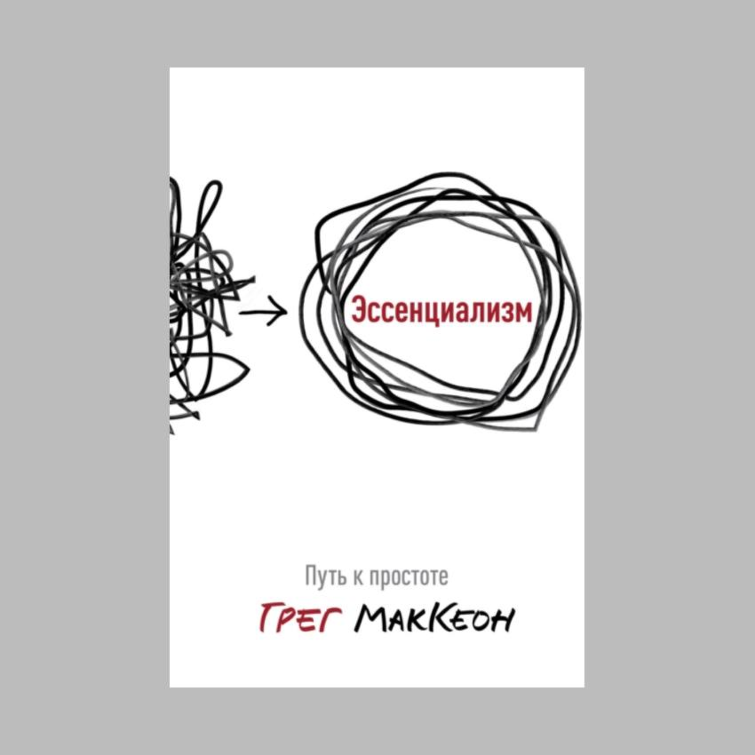

Эссенциализм. Путь к простоте
1/50, личная эффективность
Эссенциализм — это подход минимализма, который мне очень нравится. Книга научила меня, что лучше отказываться от несущественного и фокусироваться на самом важном. Делать меньше и получать больше.
Суть концепции — это заниматься только теми возможностями, которые на 90% продвигают тебя к цели. Не выбирать между 60% или 70%, а только теми, что на 90%.
Сергей Прусс